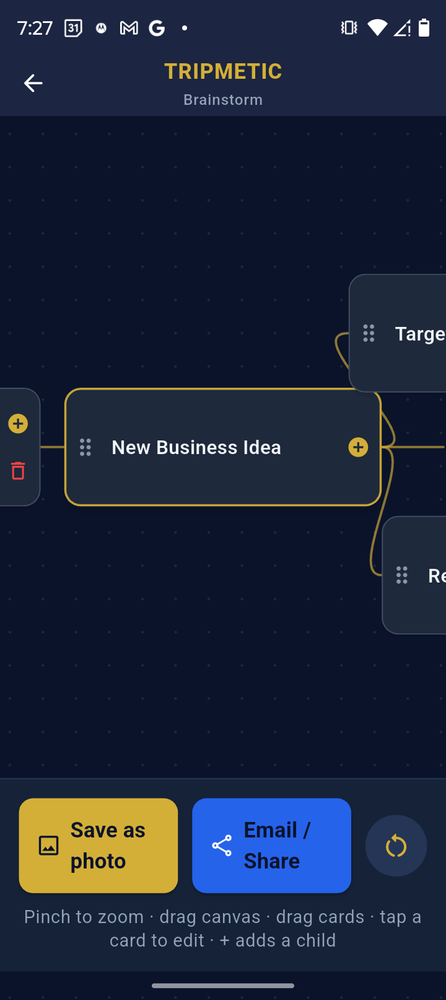
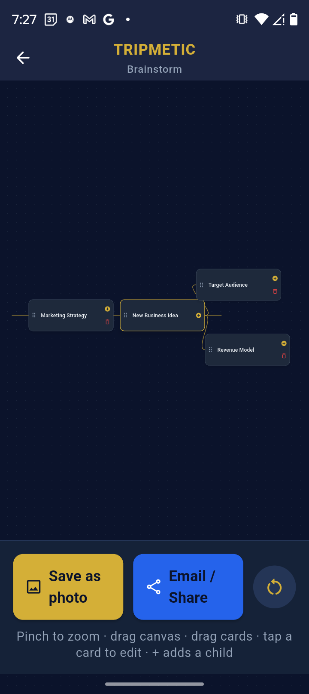
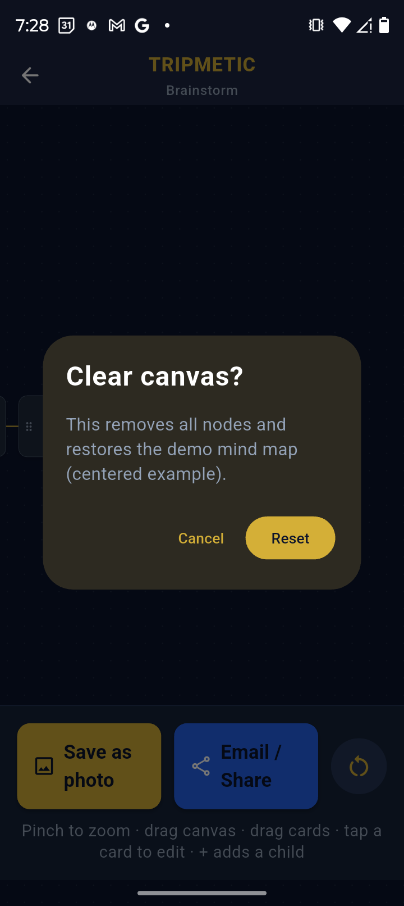
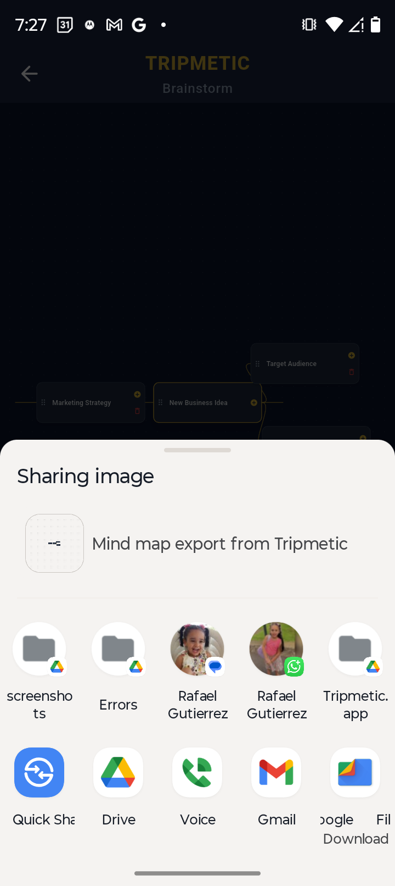

Before a trip solidifies into a strict, chronological itinerary, it begins as a scattered web of ideas. Translating raw logistical concepts—like train routes, backup hotel options, and visa requirements—into a linear checklist can force structure too early in the planning phase.
The Tripmetic Brainstorming Mind Map is a precision-engineered visual workspace. It provides an infinite canvas to visually map connections, ensuring you can architect your global journey organically before committing to specific dates. Here is how to utilize the canvas.
1 Access the Infinite Canvas
Open the Tripmetic app, navigate to the More Tools section on your bottom navigation bar, and tap on Brainstorming mind map. You will immediately enter a distraction-free, infinite visual workspace.

2 Generate Data Nodes
Tap anywhere on the blank canvas to generate a new idea node. Type in your high-level logistical concepts (e.g., "Arrive in Tokyo", "Kyoto Bullet Train", "Accommodation Options"). You can freely drag and reposition these nodes anywhere on the screen to establish a spatial hierarchy.

3 Build Relational Links
To establish the flow of your journey, draw lines to connect dependent ideas. By linking "Airport Transfer" directly to your "Hotel" node, you create a visual architecture that ensures no logistical gaps exist in your transit planning. The infinite canvas allows you to pinch, zoom, and pan as your web of ideas grows.

4 Offline Auto-Save Persistence
You do not need to manually save your progress. As you adjust your architecture, the canvas dynamically writes your visual data to the app's secure local storage. You can safely back out of the tool and return later to find your nodes exactly where you left them.

Frequently Asked Questions
Yes. The entire visual engine and the underlying local database run natively on your device. You can architect complex trip layouts while entirely off-grid or at 35,000 feet in Airplane Mode.
The canvas utilizes data-driven vector rendering, providing virtually infinite scaling and panning. Whether mapping out a weekend getaway or a multi-month, multi-country expedition, the workspace will accommodate the scope of your logistics.